| Take | Hero at 1024, then renders at 128 / 64 / 48 / 32 / 16 css px (2× retina sources), plus the 16px squint magnified | Rubric | Verdict |
|---|---|---|---|
| master · icon.svghand-authored layered SVG, Engine A after ten fidelity rounds — SHIPS | 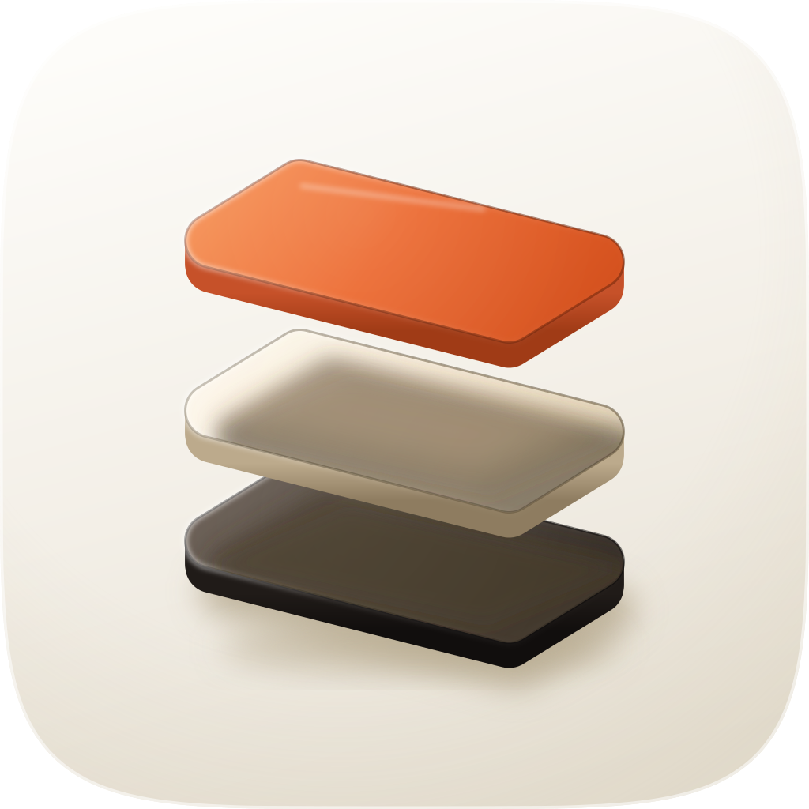 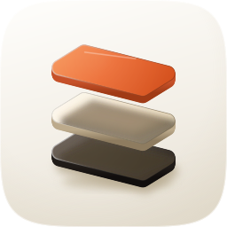 |
11 / 12 | Three page sections registered in plan and parted along the z-axis, the gap widening upward, hero in ember. Checks 1–4 all pass on these renders: clipped to the family squircle with nothing baked outside it; object 660px wide (64% of the tile) and optically centred; the filled silhouette is nameable as a parting stack; at 32px the centre column still reads three bands at 0.45 / 0.75 / 0.27 and at 16px the ember cap carries it. Four named layer groups (bg / mid / fg / highlight) and identity carried by shape and value, so #10 holds. Fails #7 on one element: the stone section measures 1.1:1 against the porcelain ground, which is a value relationship it survives only by being flanked by the ember above and the graphite below. Ember 3.06:1, whole object 3.26:1. |
| draftA · icon-engineA-draft-r00.pngthe Engine A first draft, before the loop — reference row | 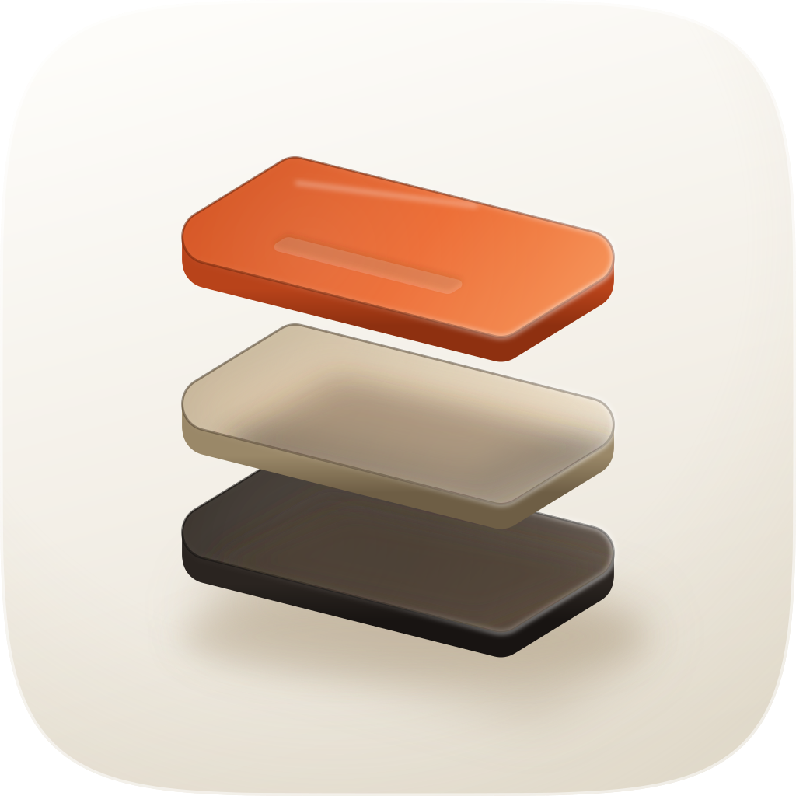 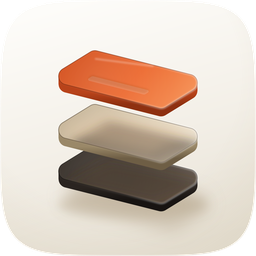 |
8 / 12 | Kept so the loop's work is visible rather than asserted. It loses on #5 and #8: every face gradient was hung on the inverse of the key, so each section is lit from its shaded quarter, and the contact shadow covered the whole of the surface it fell on, which reads as a dull face rather than a cast shadow. The headline bar on the hero is a grey smear by 128px, costing #4. All three defects were found by measuring this render against the reference, not by looking at it. |
| arrowB · icon-engineB-arrow-eb5ef2.svgArrow 2 vector take, Engine B | 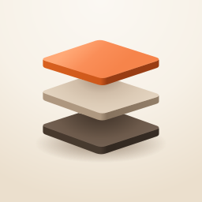 |
6 / 12 | Loses on #1, which is non-negotiable: it bakes its own square cream ground, so the tile ships with square corners beside squircle siblings. Its plan is a symmetric diamond rather than a page-shaped rectangle, which reads as a generic layers mark and not as sections of a page, and its depth comes from flat two-stop gradients with no contact shadow between the slabs, costing #8. What it contributed: it is the independent confirmation that the registered-stack composition survives at 32px, and its tighter slab thickness informed the master's 32px wall. |
| rasterC1 · icon-engineC-raster-4397a7.pngGPT Image 2.6 Sunburst, corpus-referenced — Engine C take 1 | 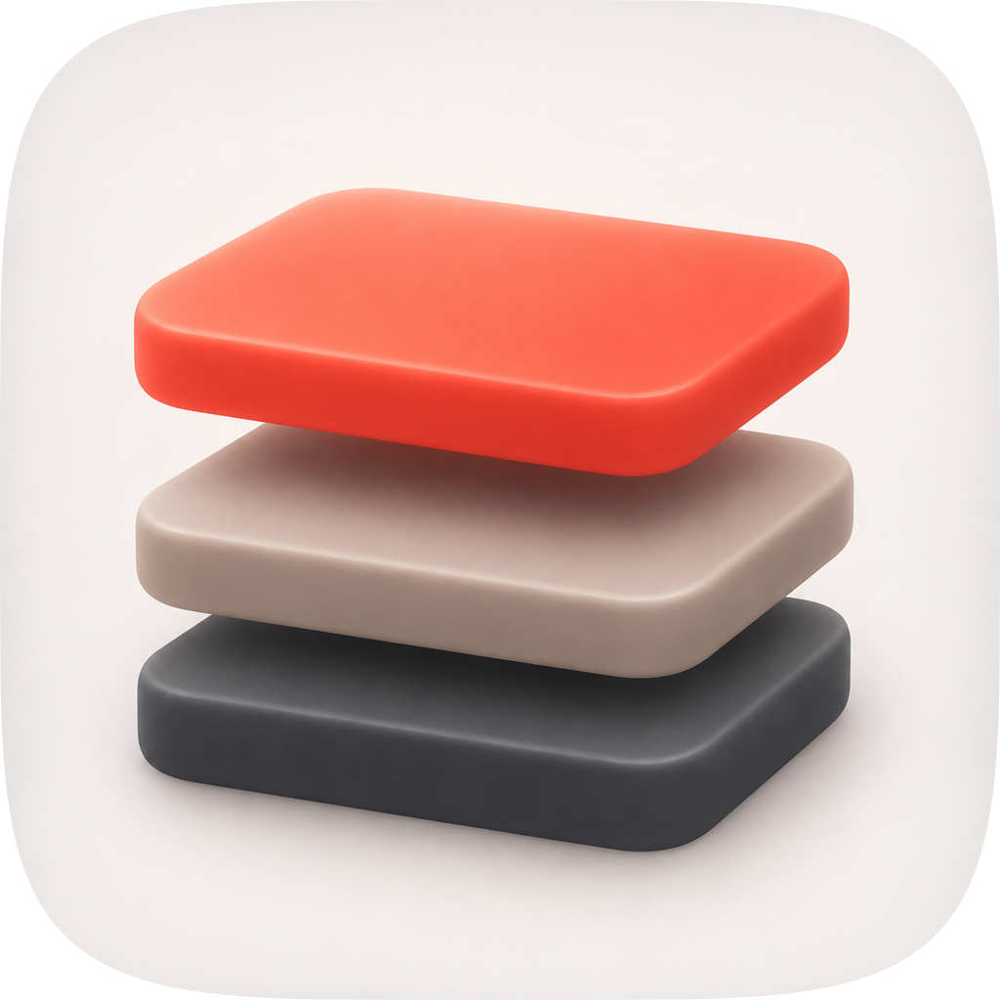 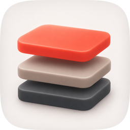 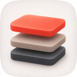 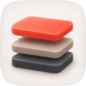 |
7 / 12 | The material is the best thing in this set and the proportions are the worst: the slabs are nearly as deep as they are wide and thick enough to read as bars of soap, so the subject becomes a layer cake rather than a page coming apart. The sections also walk right as they rise instead of staying registered, which says "separate cards". Shipped as a flat raster it would re-create #10 outright. It set the brief for takes 3 and 4 and it is where the hero's lit-corner-to-shaded-corner ramp was first measured. |
| rasterC2 · icon-engineC-raster-44d606.pngGPT Image 2.6 Sunburst — Engine C take 2 | 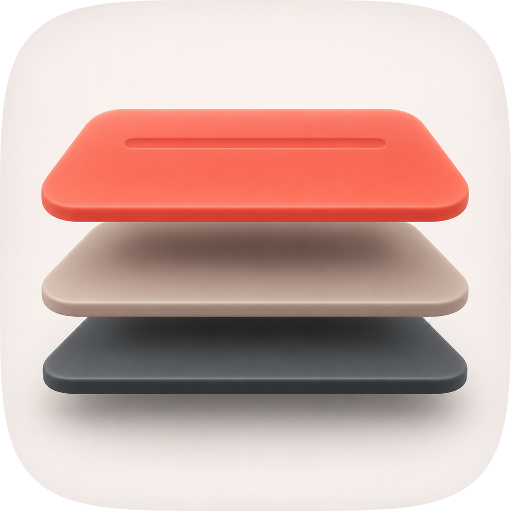 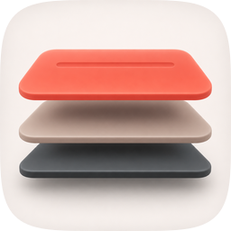 |
7 / 12 | The camera dropped almost to the slabs' own plane, so the top faces foreshorten away and the stack reads as three bars seen edge-on — the one thing the subject cannot afford, since a page section has to show its page. The stack also runs within 80px of the tile edge, costing #2, and the embossed headline it was asked for came back as a machined slot. Its contribution is the thin-slab proportion the master uses. |
| rasterC3 · icon-engineC-raster-ab01f2.pngGPT Image 2.6 Sunburst — Engine C take 3, the material target | 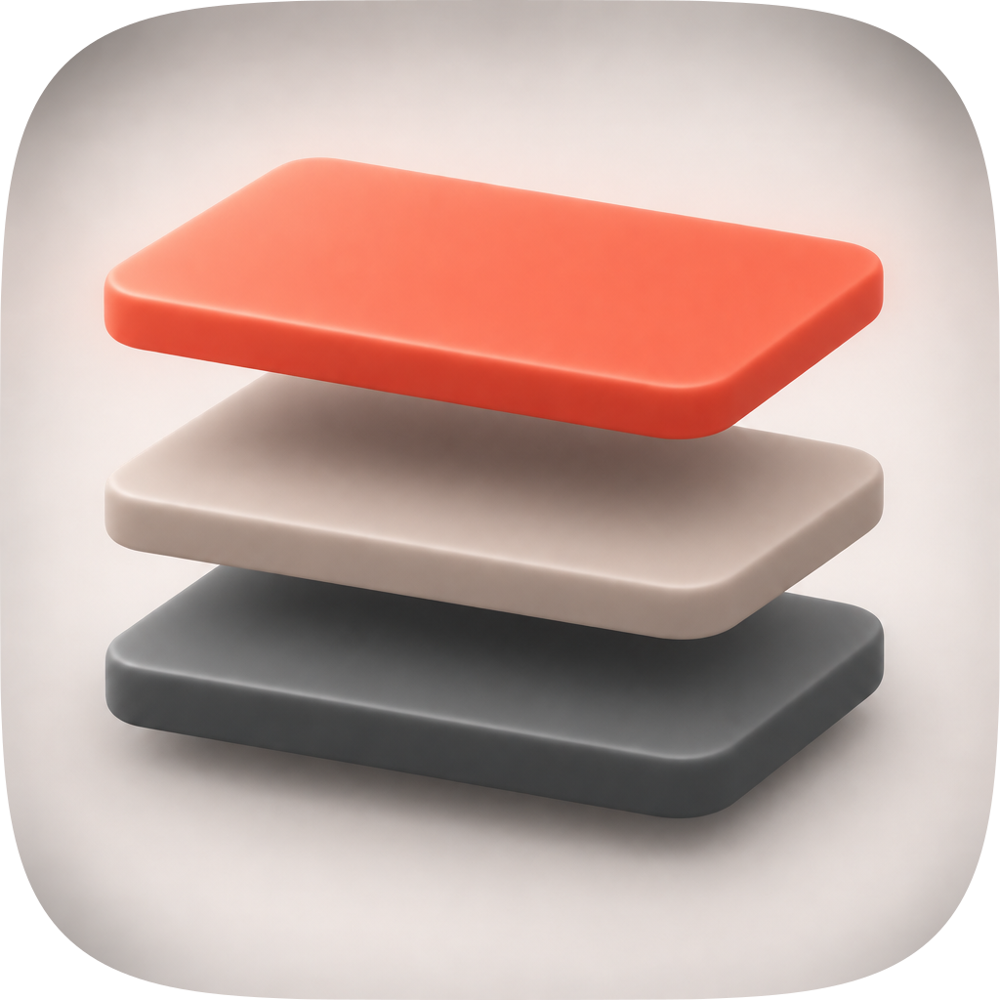 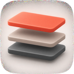 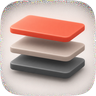 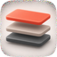 |
8 / 12 | The take that won the material read, and the one the master's plan geometry was fitted to: width axis (565, 142), depth axis (231, −142), both dropping by the same 142, which is why its left and right corners sit level. It loses on #2 — the stack is 78% of the tile where the grid puts it at 64% — on #9, for a heavy grey corner vignette that the porcelain register does not have, and on #7, since its ember lit face sits at 1.6:1 against its own ground. Flat raster, so #10 fails by construction. Everything it got right is now in the master; the three things it got wrong were held against it. |
| rasterC4 · icon-engineC-raster-114146.pngGPT Image 2.6 Sunburst — Engine C take 4, the loop reference | 6 / 12 | Asked for take 3's material on the icon grid with the vignette dropped, it delivered both and then added what nobody asked for: a badge, rows of pseudo-text and an image placeholder baked into every face. That is #12 outright, it takes the palette to five hues against #6, and the rows are mud by 32px. It is still the loop's reference, because scale and ground register matter more to a delta-based gate than content does — scored against take 3 the same unchanged master read 0.44 / 0.40 / 0.36, and against this one 0.59 / 0.62 / 0.67. |
build_icon.py — so it survives Dark, Clear and Tinted where every raster here fails #10 by construction. Checks 1–4 were audited on the renders above rather than imagined, and the material was rebuilt from the raster by measurement: the light bearing, the three value bands, the contact-shadow depth and its displacement were each fitted against the reference and each moved a measured number. Known liabilities to revisit: the stone section measures 1.1:1 against the porcelain ground and reads only because the ember above and the graphite below flank it, which is the same liability deck-craft published for its three porcelain plates; the blind panel could not reach a verdict, because the grok lane is unauthenticated on this machine and the OpenAI lane's key was refused by the secrets broker, so the shipping take is promoted on measurements and one excluded in-family vote and wants a human eye before it is treated as settled; the loop's own reference carries baked UI content, so the 1024 composite plateaus near 0.58 and is not comparable with other commissions in this marketplace; and on the shelf this device sits near deck-craft's fanned slides and clarify's drawn card, separated by registration, by the value ladder and by a gap that grows upward rather than a fan that spreads sideways.Ten rounds, full metric tier (torch + lpips installed for this commission, so material was actually measured at 256 and 1024 rather than guessed at). Composite per size against the Engine C take 4 reference; r02 is the re-baseline where the reference changed and the artwork did not.
| round | edit class | gate | 1024 | 256 | 128 | 32 | 16 |
|---|---|---|---|---|---|---|---|
| r00 | baseline, vs take 3 | — | 0.4448 | 0.4140 | 0.3688 | 0.7746 | 0.8461 |
| r01 | light bearing re-hung on the key | REJECT | 0.4439 | 0.4038 | 0.3636 | 0.7743 | 0.8466 |
| r02 | re-baseline, vs take 4 | — | 0.5859 | 0.6212 | 0.6654 | 0.8990 | 0.8905 |
| r03 | value bands | REJECT | 0.5886 | 0.6229 | 0.6682 | 0.9009 | 0.8960 |
| r04 | value bands, base held dark | ACCEPT | 0.5863 | 0.6252 | 0.6684 | 0.8984 | 0.8933 |
| r05 | contact shadows deepened | ACCEPT | 0.5855 | 0.6265 | 0.6714 | 0.8947 | 0.8894 |
| r06 | shadow displacement corrected | ACCEPT | 0.5817 | 0.6232 | 0.6682 | 0.8925 | 0.8902 |
| r07 | headline bar removed | ACCEPT | 0.5810 | 0.6228 | 0.6685 | 0.8924 | 0.8901 |
| r08 | ground pool tightened | ACCEPT | 0.5810 | 0.6228 | 0.6665 | 0.8912 | 0.8895 |
| r09 | stone band lifted | ACCEPT | 0.5808 | 0.6247 | 0.6663 | 0.8898 | 0.8895 |
| r10 | shadow opacity eased for 32px | ACCEPT | 0.5845 | 0.6266 | 0.6690 | 0.8939 | 0.8922 |
Two rounds are worth reading as cases rather than rows. r01 fixed a defect measured on the reference itself — every face lit from its shaded quarter — and the gate rejected it at −0.0161, because brightening the left of an object smaller than the reference's lands on the reference's background; that rejection is what bought the reference change in r02. r03 moved the net composite up by +0.0146 and was rejected on the 32px self-contrast floor, which is the floor doing exactly its job: converging the base section onto the reference's much lighter slate flattened the spread at the size where the stack has to read as three things. Both are recorded with their numbers in loop-runs/.
python3 ../../create-mac-icon/skills/create-mac-icon/scripts/audit_sheet.py render . (1024 / 256 / 128 / 96 / 64 / 32 sources); verified by its check subcommand.